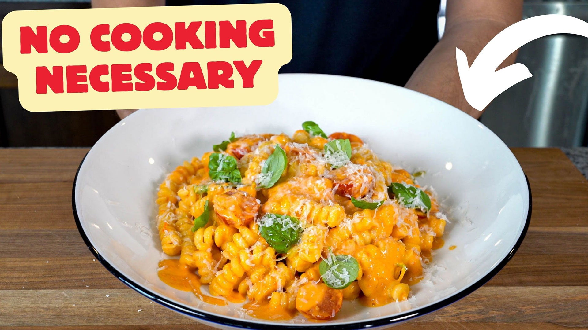

Pomodoro Crudo

Description
Pomodoro crudo, or raw tomato sauce, is the pasta you make when it's far too hot to cook in the heart of august, and its flavor and simplicity will blow your mind.
Ingredients
- 1 Lb of Fusilli Corti Bucati (100-110 Grams of pasta for 1 Serving)
- 1 Pint, Red and Sun Gold Cherry tomatoes, halved
- 6-8 Small Fresh Basil Leaves
- 1 Clove of Garlic, Minced
- 1/4-1/2 of a Lemon, Juiced
- 3-4 Tablespoons, of Extra Virgin Olive Oil
- 1/2 Cup of Parmigiano Reggiano, Grated
- Salt
Steps
- You start by slicing the cherry tomatoes in half. If you are using big tomatoes, then slice in half, remove the seeds and dice into bite size.
- Place the tomatoes in a big mixing bowl and add chopped garlic, chopped basil and chopped shallots. Add a little bit of salt.
- To the bowl now pour olive oil and balsamic vinegar. Give it a toss and leave aside for 2 to 3 hours.
- The salt will soften the tomatoes, releases its juices, turning the raw tomato mixture into a sauce. You can further crush the tomatoes a little bit if you like.
- Boil the pasta. The dish is typically used with spaghetti, but you can use your choice of pasta too.
- Mix everything, add Parmesan cheese and enjoy right away!